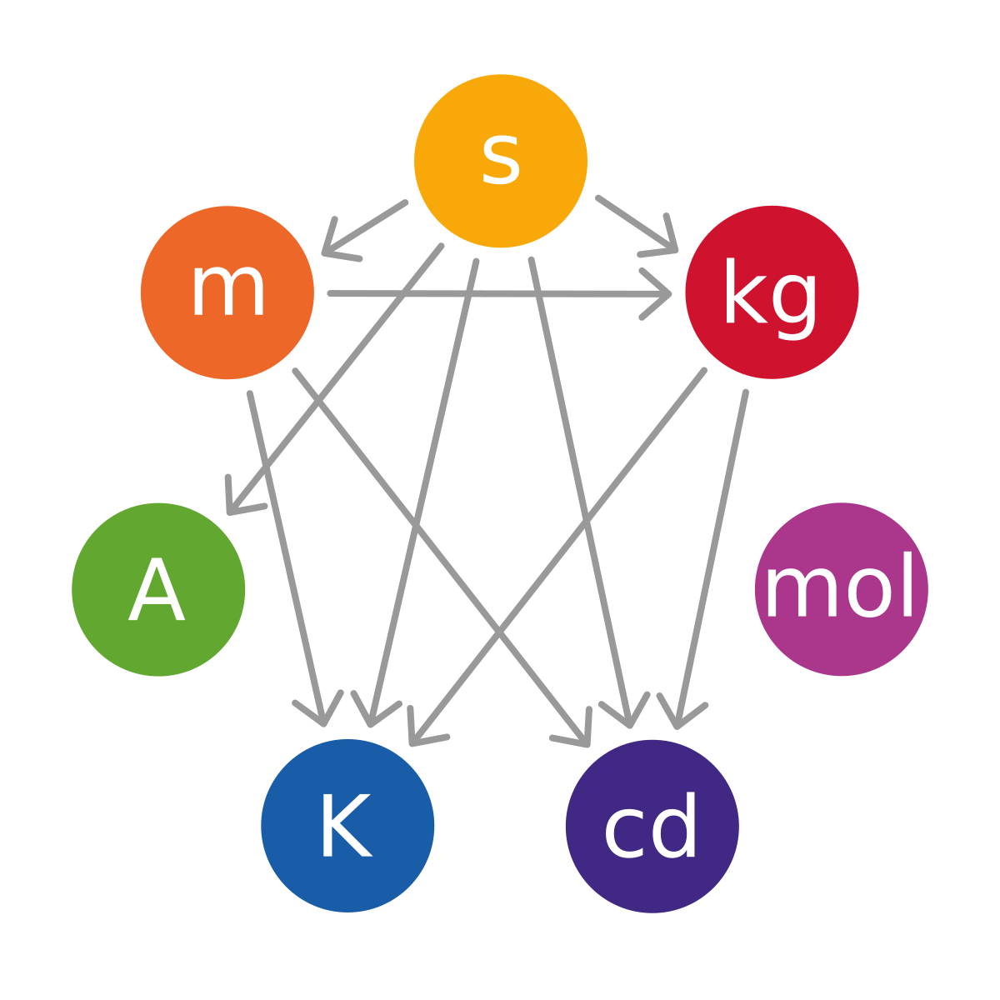

Medir es bucar un patrón dentro de un objeto, esto se realiza desde la antiuedad, pero para medir se necesita una unidad; que se puede establecer a criterio propio, un dia todos los paises se cansaron de tener tantas unidades porque resultaba confuso, y por eso se establecio el sistema internacional de unidades(SI),que usamos en colombia; sin embargo hay cosas que se reusaron a seguir este sistema, por eso en esa clase aprendimos a pasar de una unidad a otra por medio de operaciones básicas
Tambien vimos análisis dimensional, porque en física si que hay fórmulas y a veces nos enredamos en las unidades, aprendimos a dar el resultado dependiendo de las magnitudes dadas

"Mide lo que sea medible y haz medible lo que no sea"
Galileo Galilei